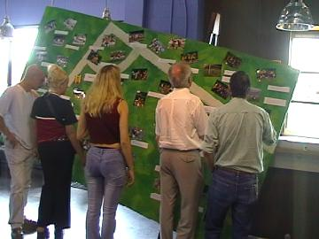

|
Open dag 4 augustus 2002 |
Diverse tentjes en activiteiten op het plein voor de
hoofdingang. Hier de stand van het Fanprojekt met
de nog net niet getrouwde PW.
De WSU hadden veel nieuwe merchandise.
De presentatie van de spelers had een "low-budget"
karakter. Deze keer geen helicopter maar een oproep
van alle spelers door trainer Vloet.
Paarsgewijs stonden de spelers in het veld zoals hier
Sonko en Nygaard. Er ontbraken echter nog twee
spelers.....

....Christiano en Sergio! Ze maakten hun opwachting
temidden van een vrolijke samba-drumband.
De gehele selectie maakte een rondgang langs de
tribunes. Vicelich was er nog steeds niet bij.

In het supportershome was er een kleine foto-expositie
van historische Roda-spelers en -trainers.
Voor de kinderen was er veel vertier zoals deze
klimwand.
Een Bavaria-meisje deelde gratis draagriemen uit.
Een vriendelijke reus met Roda-tattoo.
Sjpasvogel Henk Muijs.
Toen de Dorsjvlaegels hun Tiroler repertoire verlegden
naar Latino-klanken verschenen deze danseressen.
Ondertussen waren er demonstratietrainingen in het
stadion. Na afronding daarvan kwam de selectie en
staf naar het plein om handtekeningen uit te delen.
De webmistress van Rodakeepers bij Kujovic.
Tom ligt nog altijd goed bij het vrouwenfront.
Rudge komt backstage winkelen bij het Fanprojekt.
Eneco sponsorde een bestelbus vol ballen die door de
spelers het publiek in werden geschoten.
Sommige mensen gingen met onbeschaamd veel ballen
aan de haal wat meteen bestraft werd met een fikse
regenbui.
Deze Bavaria-supporters hadden minder ballen, maar
veel meer paraplu ;-)
© Koempels
Pleasure Dome